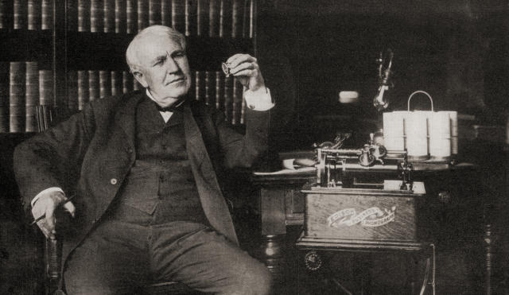

Edison asistió a la escuela durante tres meses en Port Huron (Michigan). Los profesores que le atendieron durante el único período de su vida que permaneció en la escuela lo calificaron de «alumno retrasado». Su madre se encargó de darle la formación elemental. Cuando Thomas tenía diez años, se preocupó por proveerle de libros de ciencia, concretamente de física, e incluso de instalarle un pequeño laboratorio de química en el propio hogar. A los doce años Thomas Alva Edison comenzó a vender periódicos en el tren que hacía el recorrido entre Port Duron y Detroit, mientras se dedicaba en su tiempo libre a la experimentación con imprentas y con distintos aparatos mecánicos y eléctricos. Compró una vieja máquina de imprimir que encontró de ocasión, la instaló en un tren y, con las noticias de que podía enterarse, hizo un periódico para los viajeros. Nacía así su Weekly Herald. En 1862 publicó un semanario, el Grand Trunk Herald, impreso en un vagón de mercancías que además le servía como laboratorio.
urante su trabajo como operador de telégrafos, Thomas Alva Edison creó su primer invento destacado, un repetidor telegráfico, gracias al cual se podía transmitir mensajes automáticamente a una segunda línea sin que estuviera presente el operador. Tras algún tiempo como operador de telégrafos, Edison logró un empleo en Boston (Massachusetts) y dedicó todo su tiempo libre a la investigación. Durante su trabajo en la compañía de telégrafos Gold and Stock de Nueva York, logró mejorar los aparatos y los servicios de la empresa. Ganó cuarenta mil dólares vendiendo accesorios telegráficos y pudo montar en 1876 su propio laboratorio. Después logró un sistema telegráfico automático que mejoraba la calidad y rapidez de transmisión. Su gran invento dentro de la telegrafía fue la creación de unas máquinas que permitían la transmisión simultánea de diversos mensajes por una línea, que provocó el aumento de la utilidad de las líneas telegráficas existentes. El invento de Edison del transmisor telefónico de carbono fue muy importante para el desarrollo del teléfono, que había sido patentado recientemente por el físico estadounidense Alexander Graham Bell. Durante 1877 Edison anunció que había inventado un fonógrafo a través del cual se podía grabar el sonido en un cilindro de papel de estaño.
En 1879 exhibió públicamente su bombilla o foco eléctrico incandescente, su invento más importante. Tuvo un gran éxito, por lo que pronto comenzó al perfeccionamiento de las bombillas y de las dinamos para generar la corriente eléctrica necesaria. Desarrolló e instaló la primera gran central eléctrica del mundo en Nueva York en 1882. Sin embargo, más tarde, su uso de la corriente continua se vio desplazado ante el sistema de corriente alterna desarrollado por los inventores estadounidenses Nikola Tesla y George Westinghouse. Cinco años después trasladó su fábrica de Menlo Park a West Orange (Nueva Jersey) donde creó un gran laboratorio de experimentación e investigación (su casa y su laboratorio fueron convertidos en museo en 1955). En 1888 inventó el kinetoscopio, la primera máquina que producía películas mediante una rápida sucesión de imágenes individuales. Otros inventos posteriores son el acumulador de Edison (un acumulador alcalino de hierro-níquel), resultado de miles de experimentos, el microtasímetro (se utiliza para la detección de cambios de temperatura) y un método de telegrafía sin hilos para comunicarse con los trenes en movimiento.
| Inventos de Edison | |
|---|---|
| Fecha | Invento |
| 1874 | El telégrafo cuádruplex. |
| 1880 | Bombilla de luz. |
| Principios del siglo XX | Vehículo eléctrico |
| 1893 | Quinetoscopio. |
| 1887 | Mimeógrafo. |
| 1882 | Sistema de distribución de electricidad. |
A continuación un enlace con información sobre los inventos de Thomas Edison:
Inventos de Thomas Edison.